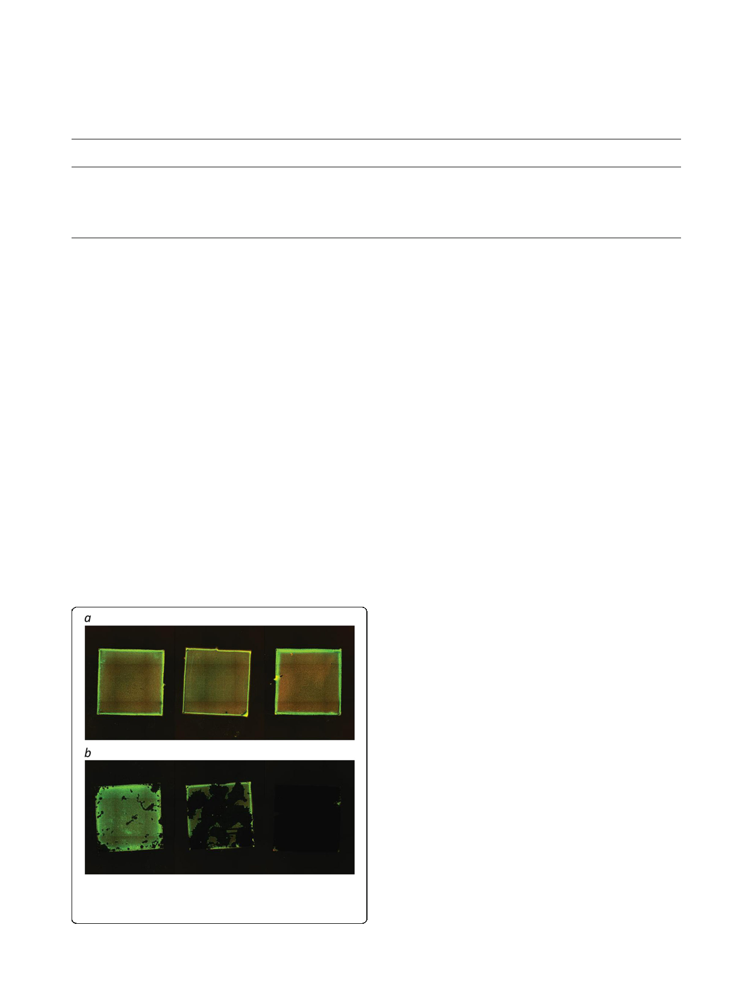

Sandbakken et al. Journal of Orthopaedic Surgery and Research (2020) 15:522
Page 5 of 9
Table 1 The table shows area covered by biofilm on the steel plates before and after sonication in both experiments (12-h and 72-
h biofil
Median (mm2)
25–75% percentile (mm2)
Minimum
Maximum (mm2)
12-h biofilm
Before sonication
25.3
(46 plates) After sonication 1.1
25.1–25.6
0.4–6.8
23.3–26.7
0.0–22.2
72-h biofilm
Before sonication
28.3
(12 plates) After sonication 22.0
27.9–29.3
0.1–28.8
27.5–30.0
0.1–30.7
area by employing 3 techniques of microscopy. Epi-
fluorescence microscopy enabled us to visualize total
plate areas before and after sonication while confocal
laser scanning microscopy and scanning electron mi-
croscopy verified bacterial growth on the plates.
Given the biofilm pattern that was often scattered
across the surface, one could easily make the mistake
of depicting an area not covered by biofilm when bio-
film in fact covered a large portion of the surface.
Avoidance of fixation was crucial, as we wanted to
observe the quantitative changes on every plate before
and after sonication with subsequent counting of CFU
from the sonication fluid from the same plates. We
found it advantageous to use an in vitro model simple
for others to reproduce, but acknowledge that in vivo
models would have been advantageous for achieving
more clinically relevant results.
The variable effect of sonication on biofilm removal
presented here is in part contradictory to other reports
from in vitro experiments claiming that sonication alone
completely dislodges biofilm [2] or in combination with
autoclaving [15]. Supporting findings exist where biofilm
Fig. 4 The figure illustrates variation seen in area covered by biofilm
after sonication. Epifluorescence images show establishment of biofilm
after 24-h incubation (before sonication (a), after sonication (b))
embedded S. epidermidis did not dislodge completely [22].
Biofilm could be detected microscopically by qualitative
analysis after sonication, but the sonication was performed
with a handheld probe meant for operative use and there-
fore not directly comparable to our results. The methodo-
logical description is often scant for numerous in vitro
studies using sonication as a means to dislodge biofilm for
subsequent quantification. Our results show larger variation
after sonication in the more mature 72-h biofilm compared
to the 24-h biofilm, but this only applies to our in vitro
model. When carrying out an in vitro experiment, one
should consider if biofilm might still adhere to the object
after sonication. This could lead to unreliable results when
doing subsequent quantification of dislodged bacteria.
Several clinical trials have not convincingly proved
sonication as a superior method to recover viable bac-
teria in cases of PJI. One might speculate whether the
variation seen in our study also applies to in vivo bio-
films in chronically infected prostheses, and thus explain
why culture of sonication fluid has not been unani-
mously reported superior to culture of tissue samples.
The differing results in the literature regarding the sensi-
tivity of culture of tissue samples compared to cultures
of sonication fluid could be linked to our results show-
ing a highly variable effect of sonication. It might be that
in vivo biofilms are even more resistant to sonication
than in vitro biofilms. One should consider inadequate
removal of biofilm during sonication as a reason for
lower sensitivity for sonication fluid compared to tissue
samples, as problematized in the introduction [5, 6, 9,
10, 28]. CFU counting of dislodged bacteria is a standard
method for quantification. One must assume uncertain-
ties in CFU results since biofilm dislodge in aggregates
[11, 26]. We chose not to include vigorous vortex-
mixing in conjunction with sonication in the protocol as
it would be impossible to distinguish whether biofilm
detachment was due to vortex-mixing or sonication.
Additional vortex-mixing is employed in some clinical
studies, and we acknowledge that this might increase the
efficacy of the protocol. Compared to final rinsing fluid,
we observed a considerable increase in CFU/mL after
sonication in all samples. There was a 10-fold higher
number of CFU in the sonication fluid from the 72-h ex-
periment compared to the 24-h experiment. This is most